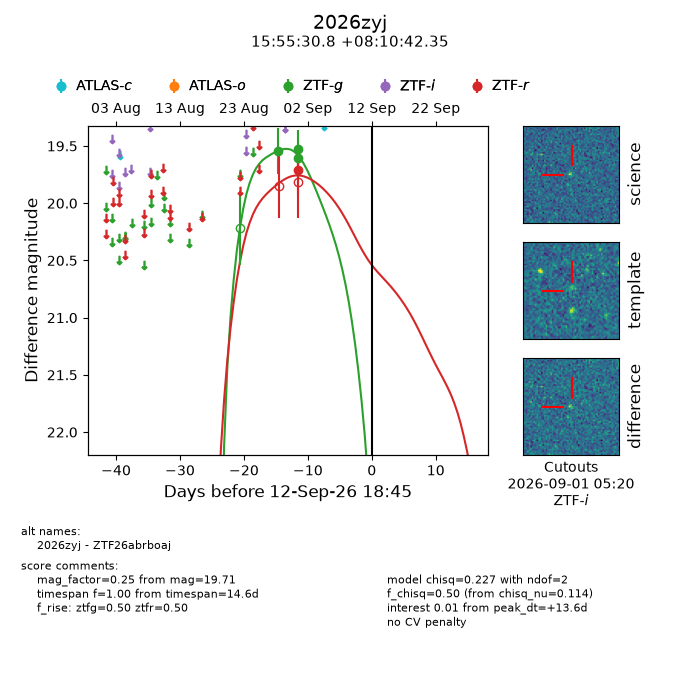
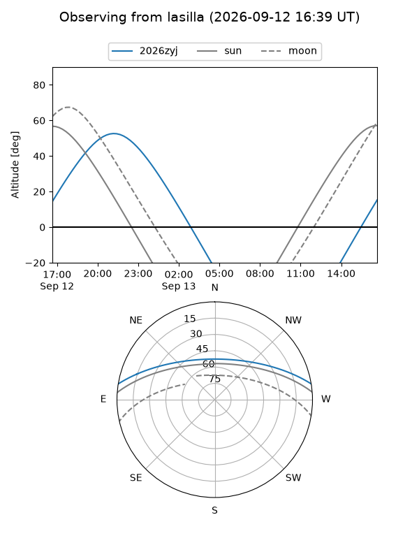
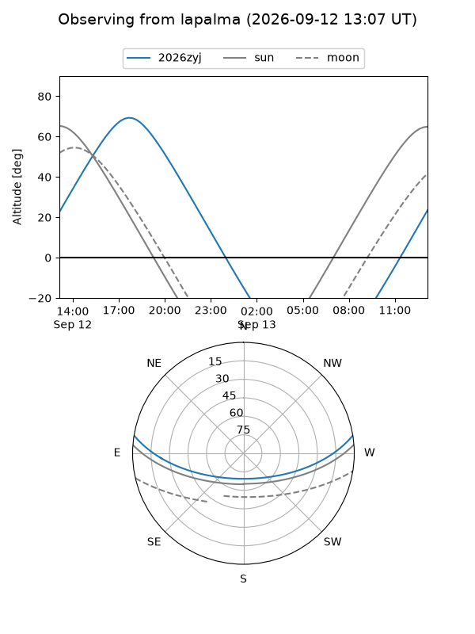
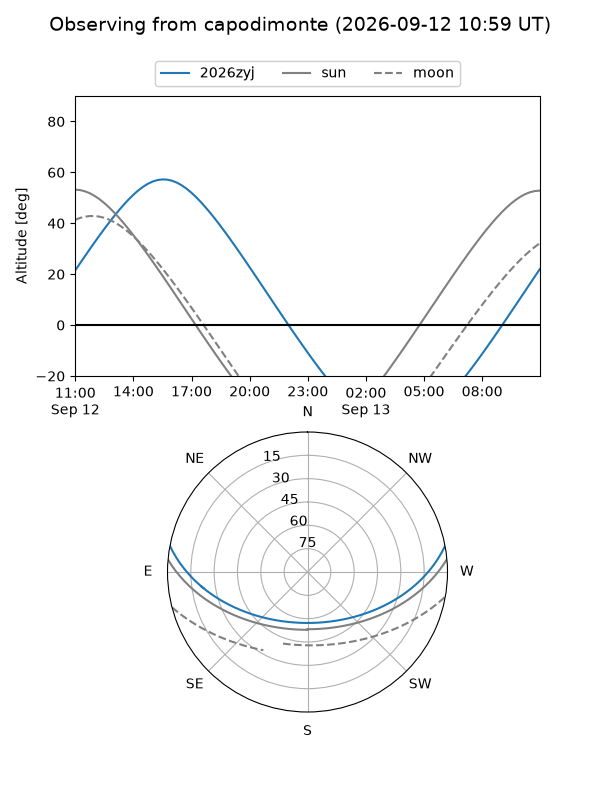
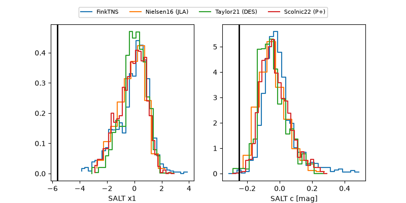

2026zyj
Target 2026zyj at 2026-09-13 06:12
Aliases and brokers:
FINK-ZTF: ztf.fink-portal.org/ZTF26abrboaj
Lasair-ZTF: lasair-ztf.lsst.ac.uk/objects/ZTF26abrboaj
ALeRCE-ZTF: alerce.online/object/ZTF26abrboaj
YSE-PZ: ziggy.ucolick.org/yse/transient_detail/2026zyj
TNS name: wis-tns.org/object/2026zyj
Direct TNS query: direct search
alt names
ZTF26abrboaj (ztf,fink_ztf)
2026zyj (tns,yse)
Coordinates:
equatorial (ra, dec) = 238.8785,+8.17843
equatorial (HMS+DMS) = 15:55:30.85,+08:10:42.35
galactic (l, b) = (18.2348,+42.57898)
Flags:
TNS type: nan
peak dt: +14.1
Photometry:
last ztfg=19.53, ztfr=19.71
3 ztfg, 1 ztfr detections
Lightcurve

Visibility



Additional plots
